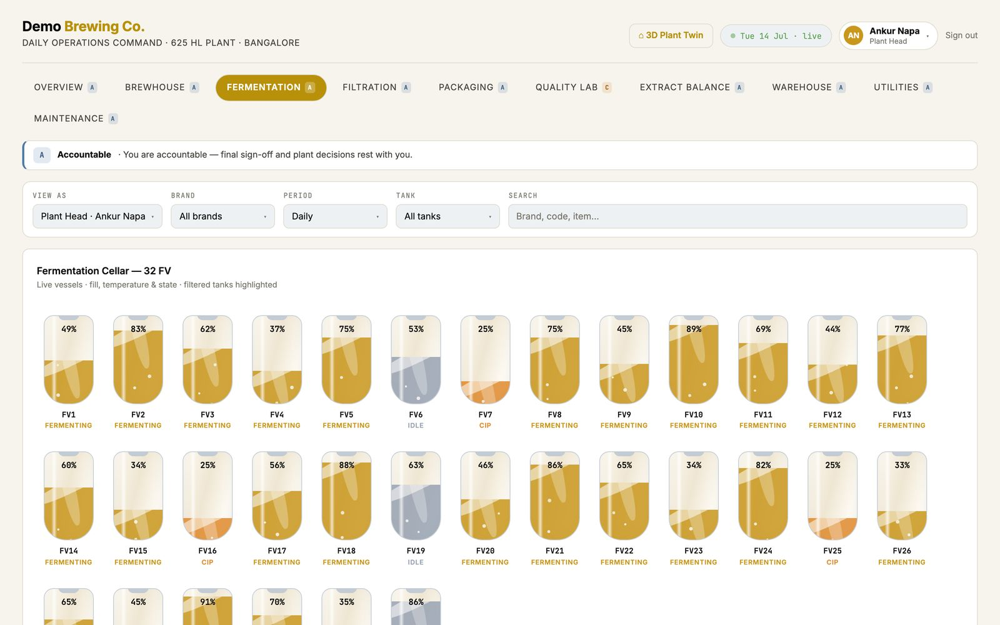
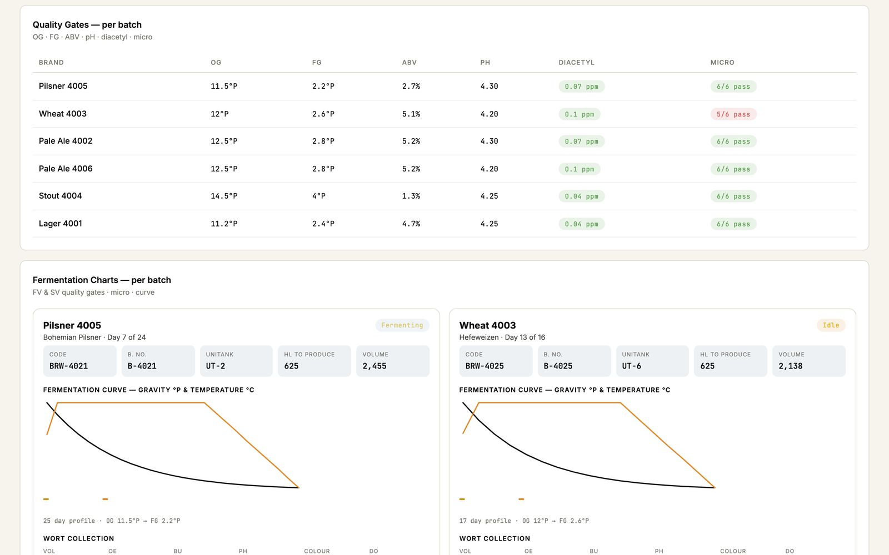
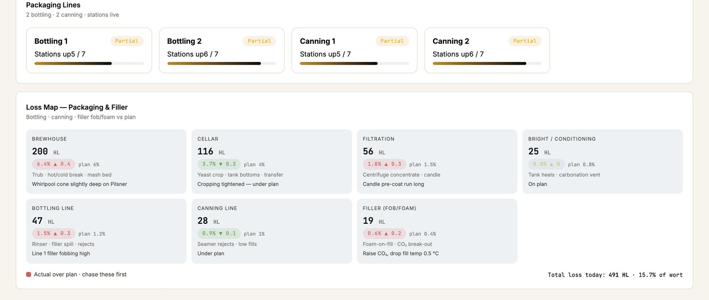
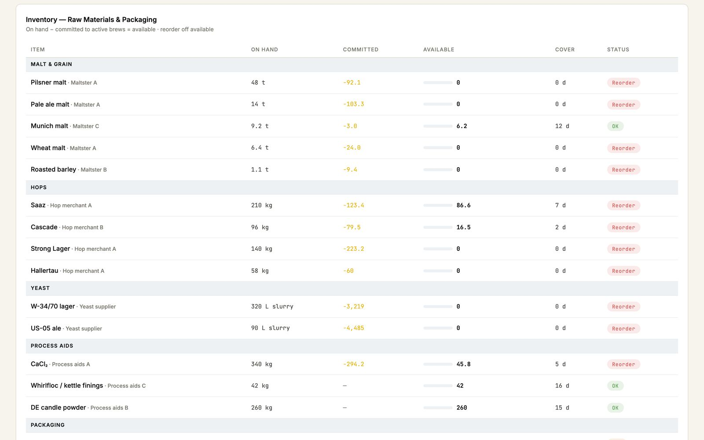
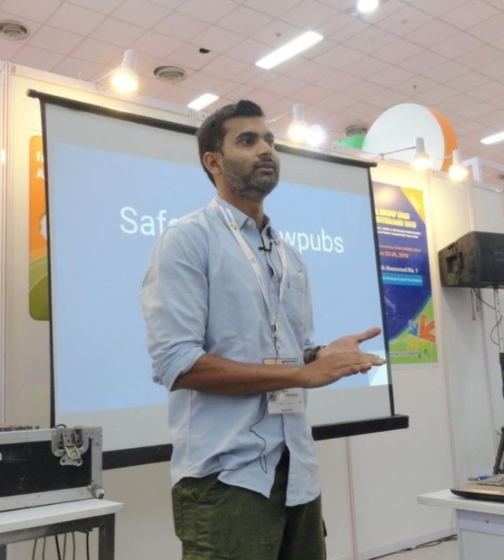

Beer loss
hL a year × points of loss recovered × brewing cost per hL
We assume one point recovered.
Lost beer is valued at what it costs to make, not its selling price, so the figure stays conservative.
Every brew, tank and line on one live record, inside your own Microsoft tenant. You see where extract, beer and energy go, stage by stage, priced in money, and every figure traces back to your own brew sheets.
30 minutes with a brewer, on your own numbers. No slides, nothing to sign.
Sound familiar?
Why did brew 4412 attenuate short?
Every brew plotted against its own target curve, with the fermenter, the yeast generation and the temperature log beside it.
Show me this on our dataWhere did this month's two percent of extract go?
Extract tracked from the malt's lab value through mash, lauter, kettle and fermenter, so the loss lands on a stage, not on the month.
Show me this on our dataWhich fermenter keeps running cold overnight?
Live tank temperatures against the profile, and the vessels that drift flagged before the batch stalls.
Show me this on our dataCan we fit another brew in before Friday?
Tank turns and cellar capacity from what each vessel is actually doing, not from last week's plan.
Show me this on our dataWhy does the report never match the head brewer's notebook?
One batch record behind every report, so brewhouse yield means the same number in the cellar and the boardroom.
Show me this on our dataIs the duty return right, or only reconciled?
Measured loss reconciled with the excise register, from data the plant already produces.
Show me this on our dataThe whole beer business
Beer365 is not a fermentation sensor or a line dashboard. It is one record of the whole brewery, so it serves every department: your head brewer, packaging lead, quality team, supply chain, sales and finance work from the same numbers.
 27 questions
27 questionsMalt, hops, water and the recipe, from the supplier's certificate to the pilot brew.
 14 questions
14 questionsMilling to wort cooling, and every point of extract along the way.
 30 questions
30 questionsYeast, fermentation, maturation, filtration and the beer's physical stability.
 16 questions
16 questionsBottle, can and keg lines, from fill level to dissolved oxygen.
 34 questions
34 questionsLaboratory, sensory, food safety, complaints and recall.
 36 questions
36 questionsPower, steam, refrigeration, CO2, water, effluent and the kit itself.
 30 questions
30 questionsWarehouse, freshness, distributors, outlets, demand and brand.
 26 questions
26 questionsTrue cost per hectolitre, excise, carbon, compliance and the shift.
 8 questions
8 questionsThe questions that cut across every department at once.
The Beer365 app
Screens from the Beer365 brewery dashboard, built on Microsoft Fabric. Shown here on demo data for a 625 hL plant.




How we count savings
Each saving is your volume, times the improvement, times what it is worth. The improvements are planning assumptions until your first month measures the real starting point, and you can replace any of them with your own number.
hL a year × points of loss recovered × brewing cost per hL
We assume one point recovered.
Lost beer is valued at what it costs to make, not its selling price, so the figure stays conservative.
hL a year × malt cost per hL × points gained ÷ efficiency today
We assume one point of brewhouse efficiency.
Every malt lot arrives with its own lab value. Comparing each brew against it shows whether a short brew was the malt, the mill gap or the sparge.
hL a year × energy cost per hL × share saved
We assume five percent of power and steam.
Tracking both by area against your own best day typically trims a few percent.
hL a year × share no longer dumped × brewing cost per hL
We assume 0.2 percent of volume.
Catching fermentation drift early saves the occasional batch that would otherwise be dumped or reworked.
hours spent compiling reports by hand × what those hours cost
We assume one person's reporting time.
The daily, weekly and month-end packs that someone builds in Excel today.
So for big sites we assume three quarters of these improvements, and for the largest half. Year one counts half the saving while the system goes live.
Lost sales in sold-out months, faster complaint answers, smaller recalls, water, and packaging on beer no longer lost. Real, but left out.
How the saving is proved
The first month runs on your records only, and we sign the starting point off with you.
Each month the software reports loss, extract and energy against that baseline, in hL, cases and money, adjusted for volume.
Every figure traces back to your brew sheets, dips, counts, meters and excise register.
When we publish a result, it is a signed saving over a stated period, less 25 percent for risk, approved by the brewery before anyone sees it.
Proof of concept
The first two weeks are the fixed-price assessment on our pricing page. It works from the Excel records you already keep, across the brewhouse, cellar and every packaging line, and your head brewer and packing lead give about two hours a week.
Every measurement checked, an error band on each figure, a list of any meter that needs fixing, and a fixed scope and price for the rest.
A signed baseline and agreed values per unit.
The three biggest leaks, by stage and by line.
Three signed monthly statements.
Whatever you decide afterwards, you keep the signed baseline, the leak analysis, the monthly statements and all of your data.
Ask your plant
The generative layer sits on top of the batch record, not on top of a document store. Every answer carries the vessel, the batch and the tag it came from, so the first thing a brewer does with it is verify it.
Why was last Thursday's pale ale two points short at knockout?
Batch PA‑2291 finished at 1.014 against a target of 1.012. Attenuation stalled from hour 58. Fermenter FV‑07 ran 1.8 °C cooler than the profile for eleven hours overnight, after the glycol valve on that vessel held part open. The same vessel shows the same pattern on three of the last nine batches. No other fermenter on this profile is affected.
What has that cost us?
Across those three batches, 1,140 litres of finished beer at the packaged rate, plus two extra tank days on FV‑07 that pushed brew 2287 back. I can price that against your standing cost model, or raise it as a maintenance job on the glycol valve.
Where we sit in the market
Our open Beverage AI Radar tracks 1,011 companies applying data and AI to beer, whisky and wine. Most of the tools that ship watch a single point: one fermenter, one filler, one motor. Most brewery software is built for the taproom. We build for production plants, with several packaging lines and an excise register, and join every point into one batch record.
companies on the radar work in beer
of them ship AI today
make no AI claim at all
of 95 beer AI sellers we studied publish a price. About 5 explain how a saving is worked out.
Counts from the radar as published, and from our September 2026 study of how beer AI vendors prove value. We put our method on this page because so few do.
Inside your Azure
Who builds it

Our beverage work is led by Ankur Napa. He was an R&D brewer at United Breweries, SABMiller and AB InBev, then a data scientist on AI and GenAI for AB InBev's global business units.
Brewers ask us
Yes. The proof of concept starts from the brew sheets, dips and counts you already keep. Sensors and historian data come later, if they earn their place.
No. We read from what you run and sit above it. Control and execution stay exactly where they are.
The three biggest leaks, by stage and by line, in weeks seven and eight of the proof of concept.
A fixed assessment fee, credited in full against delivery, then a monthly fee. Microsoft bills you directly and we never mark it up.
We will show you where the beer went, on a call, before anyone signs anything.
or write to info@disruptive-advantage.com